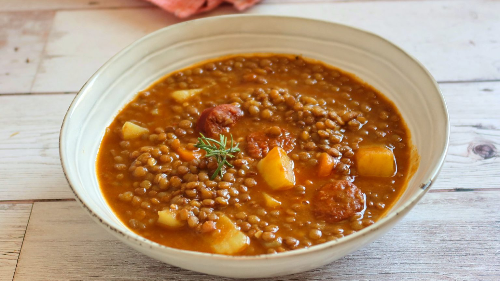

Lentejas con chorizo

Description
Recipe based around lentils and chorizo ,a typical spanish sausage, stewed
together with potatoes and carrots among other vegetables.
Ingredients
- Lentils
- Chorizo
- Potatoes
- Carrots
- Onion
- Bell pepper
- Olive oil
- Sweet paprika
Steps
-
Sauté a chopped onion and a chopped bell pepper in abundant olive oil.
- Add the lentils previously soaked for about an hour and drained
- Add diced potatoes and carrots
- Add the chorizo thickly sliced and broth or water to cover
-
Let it simmer on medium/low heat for about an hour or until everything
is cooked